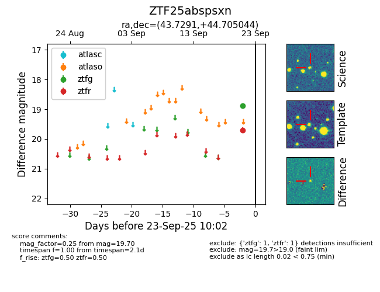

FINK: ZTF25abspsxn
Lasair: ZTF25abspsxn
ALeRCE: ZTF25abspsxn
ZTF25abspsxn (ztf,fink)
equatorial (ra, dec) = (43.7291,+44.70504)
galactic (l, b) = (144.8955,-12.83675)

last ztfg=18.87, ztfr=19.70
1 ztfg, 1 ztfr detections